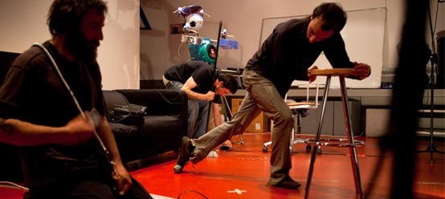

2010. EN BUSCA DEL PASTO. Todos los contenidos de esta web están bajo licencia "by-sa 3.0" de
EBDP piensa que un actuación verdaderamente improvisada siempre debe contener elementos preformativos, aún cuando la actuación se presente como estrictamente musical. Y es que, en efecto, el que se planta en un escenario a tocar música sin ninguna idea preconcebida, no sólo expone su música (el resultado sonoro de lo que toca), sino que se expone sobre todo a sí mismo desarrollando esa actividad: “riesgo”, “entrega”, “decisión” o “indecisión”, “salir del atolladero”, etc., pueden ser categorías susceptibles de ser empleadas, y tales categorías no son estrictamente musicales.
Por otro lado, cuando EBDP saca el escenario a lugares poco frecuentes (como la calle, un descampado, el campo, etc.), no sólo se modifica el espacio de la actuación (y la consecuente influencia que éste ejerce sobre los improvisadores), sino que además se pretende “desenfocar” la actividad puramente musical, mezclándola con cuestiones de índole preformativo: “qué está sucediendo aquí”, “qué tipo de espectáculo es este”, o “qué pretenden”, etc., que van más allá de comprender la obra como un mero concierto de música.
No obstante, sería en otoño de 2007 cuando EBDP tomaría plena conciencia del carácter preformativo de su improvisación, desarrollando su juego “Pasto en Escena” o “Pasto al desnudo”, donde los improvisadores no cuentan ni siquiera con un lugar asignado sobre el escenario, ni qué instrumentos u objetos habrían de utilizar. Básicamente, entonces, el juego consiste en extender la improvisación a todos los parámetros de la intervención escénica de los “músicos”, que ahora, además de improvisar música, también improvisan su lugar, su pose, su actitud, su gesto... Esto, ciertamente, abre mucho más el horizonte de sucesos posibles sobre el escenario, pues ahora éste se presta, no sólo a ser el origen de unos sonidos o unas músicas, sino también mostrar actividades más parecidas quizá al teatro, a la danza o al puro juego.
Y esto, en el fondo, no deja de ser una verdadera exigencia del “yo improviso” que debe guiar a un artista en el ámbito de la improvisación. Pues si uno verdaderamente improvisa, entonces no debería tener claro siquiera que lo que va a hacer sea música, o teatro o danza... “Yo improviso” debe querer decir: “No sé nada de lo que haré cuando suba al escenario”.